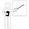

What is Gantt app?
Gantt is a project management oftware inspired by Henry Gantt to advances visual representation of porject plans. By implementing Gantt chart to your project management, you will have a better focus on the project most crucial constraint, time frame, and a greate tool to communicate your plan
Why should I care?
As a writer called called Antoine de Saint-Exuperty who became a laureate of several of France's highest literary awards and a winner of the U.S. National Book Award once saif, "A goal without a plan is just a wish." Or, as the famous Founding Father of the United States, Benjamin Franklin, said "By failing to prepare, you are preparing to fail."
I can't emphasize enough how important is planning toward your goals
Who can use Gantt?
artists
businessmen
constructors
educators
IT